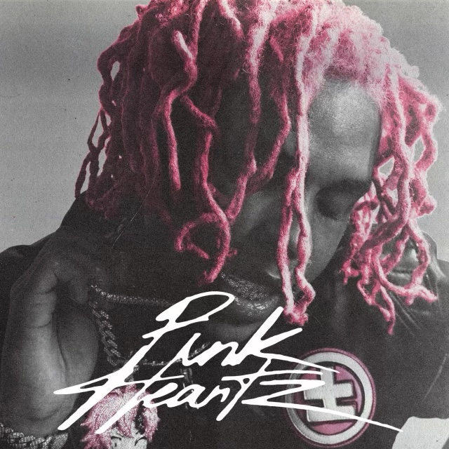
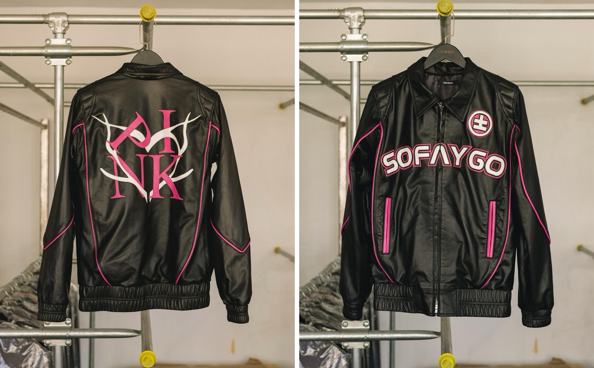
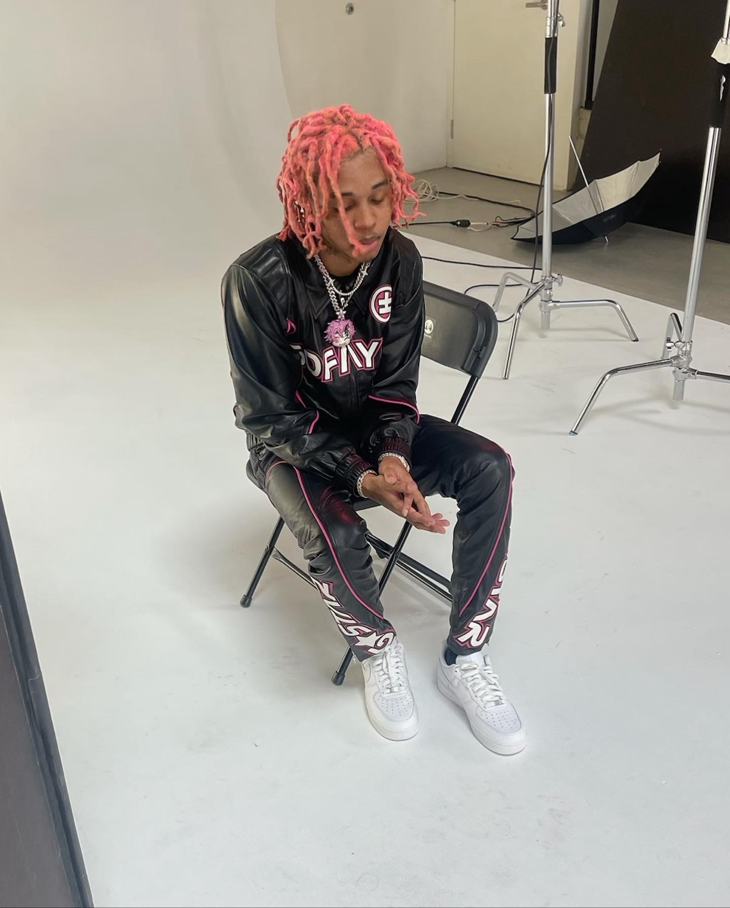
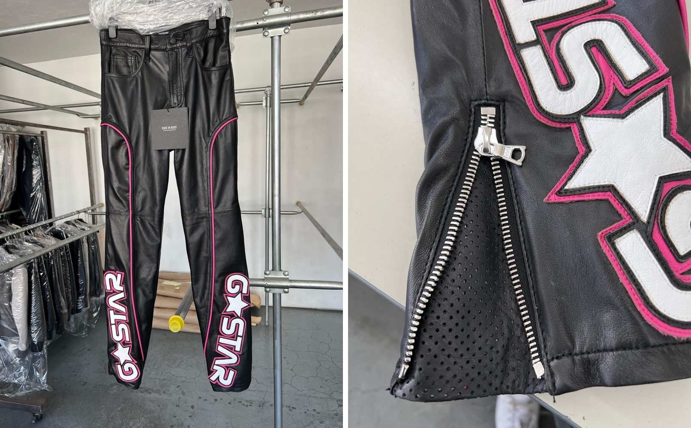

Project 17 — Wardrobe / Album Campaign
SoFaygo / Pink Heartz
About the project
Campaign wardrobe for Pink Heartz, SoFaygo's debut album: a black leather racing jacket with the album's thorned heart across the back and the SoFaygo wordmark on the chest, with matching leather pants piped in pink.
Wardrobe built for an album rollout: one look that carries the record's identity through the campaign and the press.





Credits
- Wardrobe design
- PAZL
- Creative direction
- Fred Saint Foster
- Artist
- SoFaygo